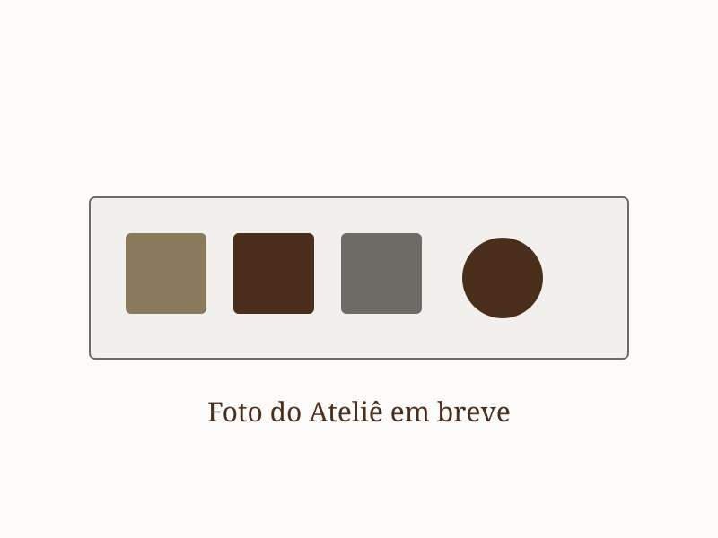

Quem Somos
A Alice Gussoni é ceramista e pintora. No Studio Alice, em Uberlândia, a aquarela da terra encontra a cerâmica: peças feitas e pintadas à mão, e vivências para quem quer aprender com as próprias mãos.

Aquarela da terra e cerâmica feita à mão
Cada peça nasce das mãos e da água: a argila, os esmaltes, as Aquarelas e Gizes da Terra, a queima no seu próprio ritmo. É com essa calma que a Alice conduz as oficinas — turmas pequenas, orientação de perto, aprendizado fazendo.
Nas vivências, você descobre como a pintura se comporta sobre a cerâmica — inclusive o que acontece com as cores depois da queima. Você pode trazer uma peça biscoitada sua ou escolher uma das peças disponíveis para compra no ateliê.
Acompanhe o trabalho no Instagram @alicegussoni.ceramica.
Alice Gussoni
Ceramista e pintora, cria peças e ensina aquarela sobre cerâmica com sensibilidade e calma — transformando cada oficina em uma experiência única de cor e descoberta.
Vem criar a sua peça
Uma tarde para desacelerar, experimentar cores e descobrir o prazer de pintar sobre a cerâmica. Esperamos você.
💬 Falar com a gente